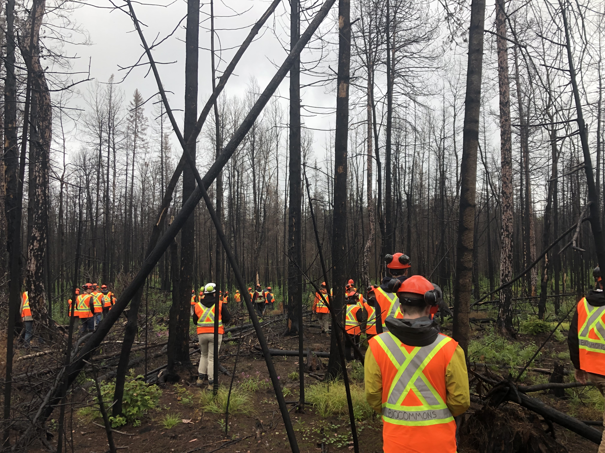
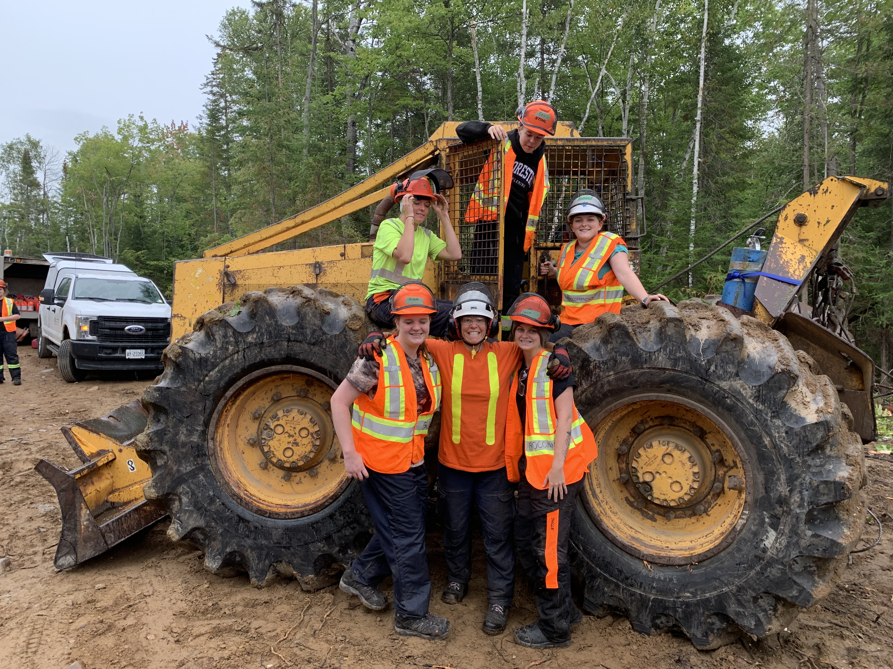

Education
Home
GIS Applications Specialist -> September 2020-June2021
The GIS Applications Specialist program at Fleming College is a fast-paced, hands-on learning experience. Riley will learn to use current technology to "collect, store, manipulate, analyze, interpret, and communicate geographic information within a variety of disciplines"(Fleming College, 2020).

Outlined below are a few of the concepts, programs etc. currently being covered:
- Visual Studio Code
- Python
- ArcMap
- ArcGIS Pro
- PCI Geomatica
- AutoCAD 3D
- MAPpublisher
Forestry Technician -> September 2019-May 2020
Fleming College's Forestry Technician program taught Riley many different practical skills as well as knowledge about forestry in Canada. Riley experienced hands on learning with a variety of arboriculture equpiment.
Riley's experience in Forestry taught her many different skills outlined below:
- Data collection
- Tree Species ID
- Forest Analysis
- Navigation with Avenza
- Tree felling/trimming
